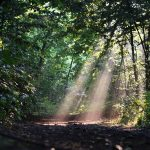
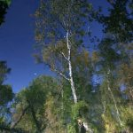
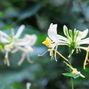
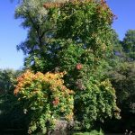

Parki we Wrocławiu - wrocławska przyroda
Współczesny rozwój miast, w znacznym stopniu wpływa na kształtowanie środowiska. Z przyczyn ekonomicznych - parki jak i inne tereny zielone, zaczynają ustępować miejsca nowym biurowcom, budynkom mieszkalnym, czy zakładom produkcyjnym. To właśnie postepująca urbanizacja powoduje, iż parki powinny odgrywać jeszcze większą rolę w otaczającym nas środowisku. W wysoko rozwiniętych miastach Polski, do których niewątliwie należy zaliczyć Wrocław, nie ma już miejsca na zakładanie nowych terenów zieloncyh. Z tego względu, powinniśmy skupić szczególną uwagę na już istniejących.
Obecna strona ma na celu przybliżyć Pańswtu ekosystemy czterech wrocławskich parków. Przedstawiam również inne aspekty związane z naturą, jej ochroną, jak i atrakcjami. Poniżej znajduje się krótki opis jednych z najpopularniejszych terenów zielonych miasta Wrocław.
   Park Zachodni
Park Stanisława Tołpy
Park Wschodni
Park Skowroni
Parki Zachodni
Park Zachodni - to park położony w zachodniej części Wrocławia. Nazwa parku została nadana § 1 pkt 3 uchwały nr LXXI/454/93 Rady Miejskiej Wrocławia z dnia 9 października 1993 roku w sprawie nazw parków i terenów leśnych istniejących we Wrocławiu. Pieczę nad Parkiem Zachodnim sprawuje Zarząd Zieleni Miejskiej, podległy Departamentowi Architektury i Rozwoju Urzędu Miejskiego Wrocławia. Powstał w latach 1897 – 1899. Park częściowo leży na terenie dawnych cmentarzy.
Park położony jest pomiędzy ulicami i następującymi terenami:
- od południa – Ulica Lotnicza
- od północy – Ulica Pilczycka oraz Grobla Kozanowska
- od zachodu – Nowy Cmentarz Żydowski we Wrocławiu
- od wschodu – Ulica Wejherowska
Atrakcjami parku są:
- place zabaw dla dzieci
- polana widokowa w starorzeczu Odry
- boisko
- stanowisko bluszczu pospolitego
- figura aniołka
- pozostałości po umocnieniach z czasów I wojny światowej
- aleja dębowa wzdłuż starorzecza Odry
- na obrzeżach parku położone są następujące obiekty: Nowy Cmentarz Żydowski we Wrocławiu hala Orbita, basen, sztuczne lodowisko w hali, hotel Most Milenijny